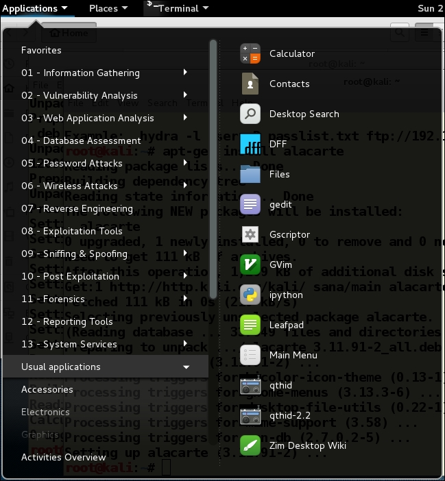

PROJECT-X_OFFICIAL_HACKING_FORUM_No.1
Main_PageNeed_of_Linux
Linux has the most accessibility over its operating system and alows you gain full access over your hardware. Unlike 'Windows' it provides the pentester with full flexibility for their programs ad softwares.
It has certain disadvantages which most people regret after installing it in their systems, that its not as user freindly as windows which may cause probelems to the user for their regular computing. So before using any linux distribution, the only suggestion is that the user should be programing freindly and has less reliability on the windows softwares. Though in present their are many sofwares which is bash(base language of linx) compatible but may often throw an error if right packeges or versions are not installed.
The most popular linux distribution is kali linux as it provides the user with tonnes of exploitaion, data gathering, spoofing, etc. toolkits pre-installed. If you still want to enjoy the comfort zone with the advantages of these tempting toolkits then you can install 'Ubuntu', This Linux distribution does not have any pre-installed hacking softwares but can be installed with external resources. Ubuntu is the first Linux distribution to have user freindly significances
KALI-LINUX_Documentaion UBUNTU_Documentaion